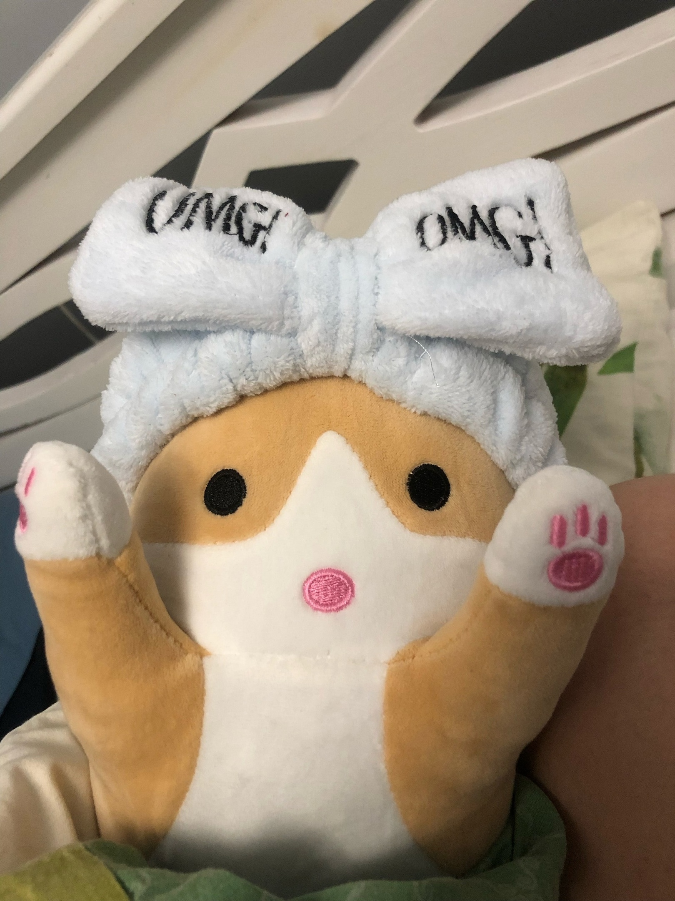

Эта страница про моего кота по имени Кот
Почему я захотела именнно этого кота,а не настоящего? На это есть много причин!
Далее я перечислю причины:
- Он не есть. Этому коту не надо покупать еду,он питается моей любовью;
- Его всегда можно обнимать и он не будет против;
- Он очень тихий;
- Этот кот не оставляет волос.
Ссылка на плюшевого котика
